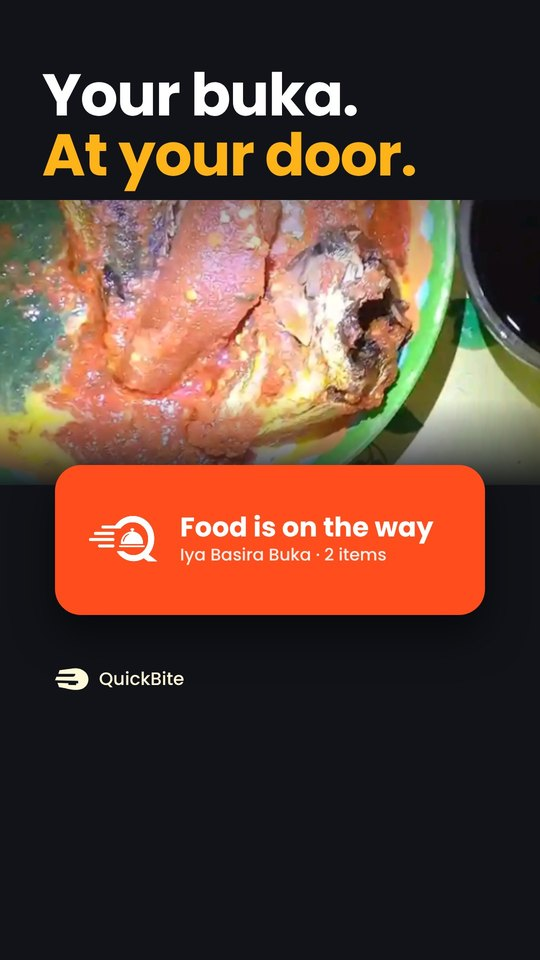

0100.0–02.5 s2.5 s
Hook · show the result
- We see
- The buka dish pushes in slowly. The “Food is on the way” card snaps up from the bottom with a firm ease-out. “Your buka.” lands, then “At your door.” A small fork mark sits bottom-left, so the brand is present without a logo intro.
- On screen
- Your buka. At your door.
- Sound
- Pan sizzle, then a notification chime as the card lands.
- Out
- The card’s speed lines streak left to right and wipe to slate.
- Why
- Opens on the outcome and the real app, never a logo. Readable on mute.